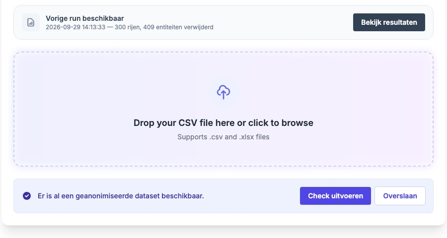
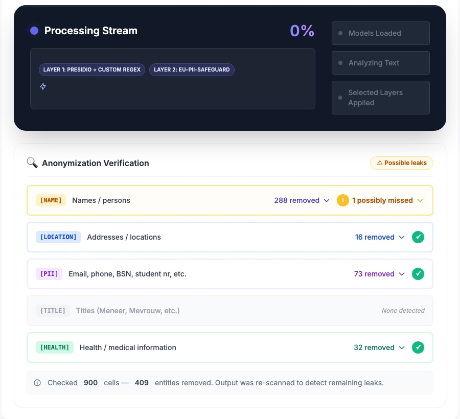
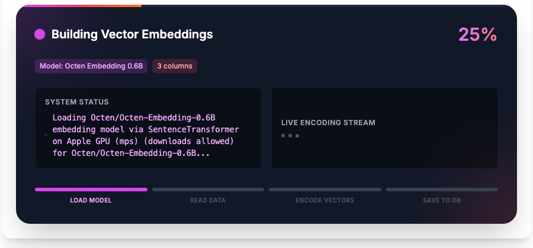
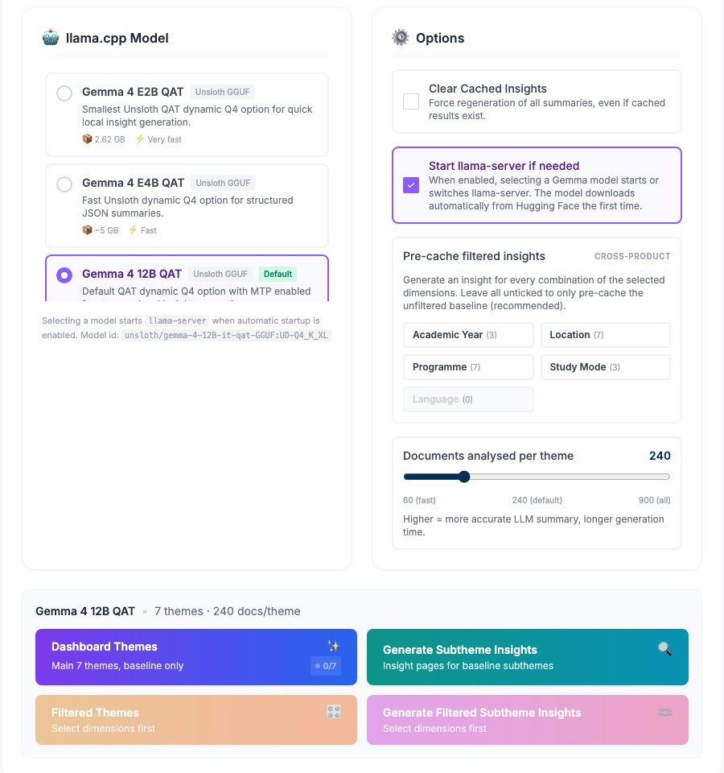
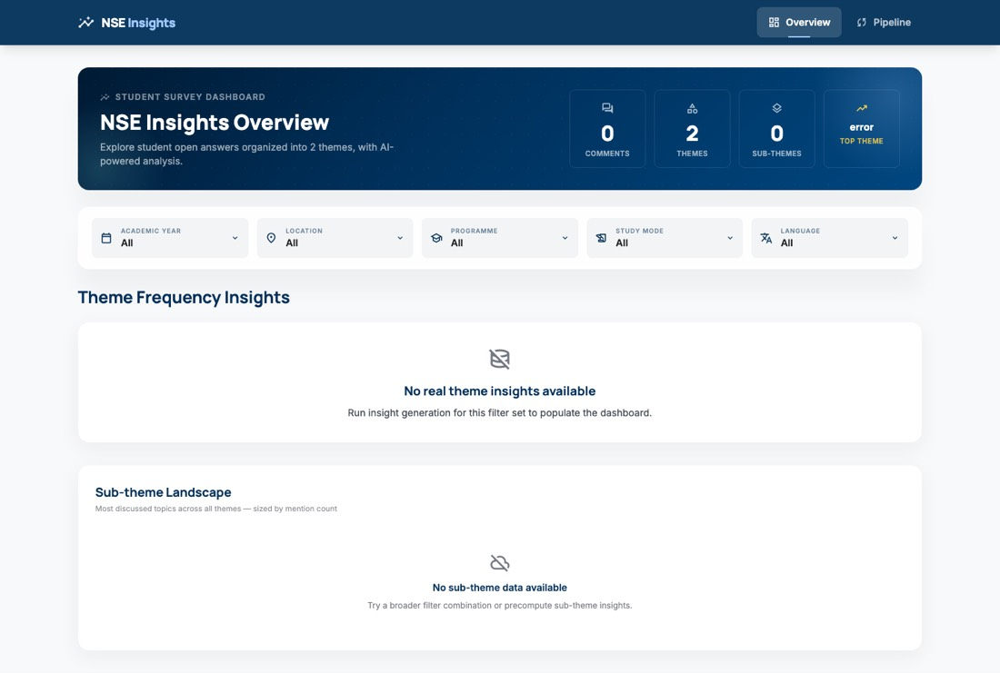

NSE Insights · UI/UX review
Every step of the app does its job: it removes personal details, organises the answers, sorts them into themes and writes summaries. What holds it back is how it presents that work. It switches between Dutch and English, asks users to choose AI models by their technical names, and rarely says what it just finished. A handful of focused changes would make it easy to use for the people it is built for.
We used the app as a first-time user would and wrote down every point of confusion. We then walked through each screen on a laptop, and checked it against established design guidelines for clarity, progress feedback and consistency.
Each area is graded from 1 (gets in the user’s way) to 5 (excellent). A first working version typically scores between 2 and 3.
| Area | Grade | What we saw |
|---|---|---|
| Results after removing personal details | 4 | Clear and trustworthy: 288 names, 16 locations, 73 personal numbers and 32 health details removed, with 1 possible miss highlighted for review. |
| Progress while working | 2.5 | One step has a good four-stage progress bar. Elsewhere, a finished step still shows “0%”, and model downloads are invisible. |
| Remembering work after a restart | 2.5 | The data is saved, but the screens don’t show it. Steps have no “done” marks, and the Overview shows 0 comments with “error” as the top theme. |
| Guidance through the steps | 2 | All five steps can be opened in any order. Nothing says which step comes next or why. |
| Visual consistency | 2 | Each step has its own colours, dark panels appear inside light pages, and emoji sit next to proper icons. |
| Language and wording | 1.5 | Dutch and English on the same card. Technical model names and system codes are shown as they are. |
Step names describe the technology, not the job. We propose renaming them:
| Now | Proposed |
|---|---|
| 1. Anonymize Data | Remove personal details |
| 2. Build Vector DB | Prepare answers for search |
| 3. Rerank Themes | Double-check themes |
| 4. Generate Insights | Write summaries |
| 5. AI Query | Ask a question |
No sense of where you are. The step menu looks the same whether a step is done or not. We propose a progress line that marks finished steps and highlights the next one, and that stays up to date after a restart:
Users are asked to choose between models such as “Octen Embedding 0.6B / 4B / 8B” and “Gemma 4 12B QAT”. Most users can’t make that choice. We should choose a sensible default and describe the trade-off in everyday terms.
When a model isn’t on the computer yet, the app downloads it without telling the user. It should show a message such as “Downloading the Balanced model, 1.2 of 5 GB”, with a progress bar.



This step is called “Theme Reranker” and shows a raw model code and a status of not_run. A non-technical user has no way to know what it does. We propose this explanation on screen:
“Some answers could fit more than one theme. In this step, a second, more careful AI reads those answers again and picks the best theme. Answers that were already clear are left alone.”
The screen should also show how many answers this affects, and use plain statuses: “Not done yet”, “Done”, “Switched off”.


| When | Change | Solves | Effort |
|---|---|---|---|
| Now | Add a Dutch / English switch and translate every label, button and status | Mixed Dutch and English on one screen, system codes | Small |
| Now | Plain step names, with a one-line explanation per step | Technical wording, “what is a reranker?” | Small |
| Now | A “Done” summary after each step and marks on finished steps | No feedback, unclear state after a restart | Small |
| Next | Quick / Balanced / Most thorough model choice | Technical model selection | Medium |
| Next | Visible progress for model downloads | Silent downloads | Medium |
| Next | One “Write summaries” button with a results list | Too many options | Medium |
| Later | One light visual style, icon set and accent colour | Inconsistent look | Medium |
Advanced settings: does anyone need the model and processing settings, or can we hide them completely?
Once these are decided, we can start with the “Now” changes straight away.